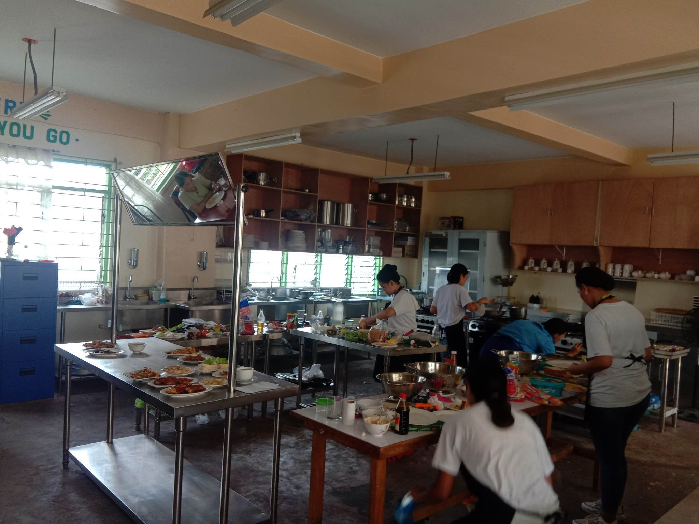

Cainta Senior Highschool
Cainta Senior Highschool
The BAP (Bread and Pastry) strand offers comprehensive training in culinary arts and hospitality management. Students gain practical skills in baking, pastry making, food preparation, and beverage service. The program covers a wide range of topics, including culinary techniques, menu planning, food safety, and customer service. Graduates are equipped for careers as pastry chefs, cooks, food service managers, or catering professionals in the hospitality industry.
• Culinary Arts
• Food Service Management
• Baking and Pastry Arts
• Food Science and Technology
